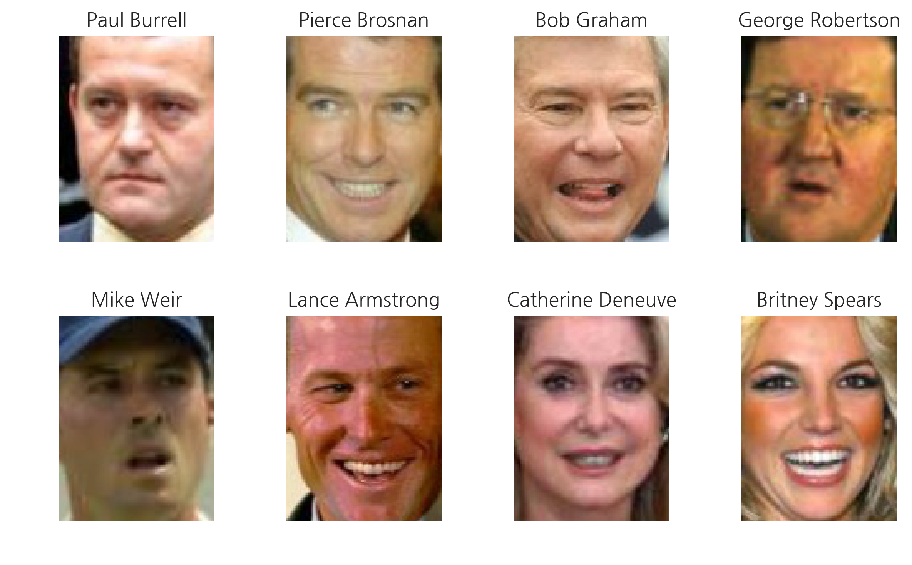

Unet
-
https://github.com/YBIGTA/data-science-2018/blob/master/DLCV/2018-02-10-Keras-U-Net-starter.md
-
Encoder - Decoder arch
-
Computationally efficient
-
Trainable with a small data-set
-
Trained end-to-end
-
Preferable for bio-medical applications
-
pixel level labeling
1 | from sklearn.datasets import fetch_lfw_people |
(5984, 125, 94, 3)
1 | for i in range(1, 9): |

1 | import cv2 |
Pair of data
Gray -> Color
1 | X = np.array([preprocess(x, gray=True) for x in imgs[:2000]]) # gray image |
((2000, 128, 128, 1), (2000, 128, 128, 3))
1 | from keras.layers import Input, Dropout, concatenate, MaxPooling2D |
Using TensorFlow backend.
1 | import tensorflow as tf |
1 | model.compile(optimizer='adam', loss='binary_crossentropy', metrics=[mean_iou]) |
__________________________________________________________________________________________________
Layer (type) Output Shape Param # Connected to
==================================================================================================
input_1 (InputLayer) (None, 128, 128, 1) 0
__________________________________________________________________________________________________
conv2d_1 (Conv2D) (None, 128, 128, 16) 160 input_1[0][0]
__________________________________________________________________________________________________
dropout_1 (Dropout) (None, 128, 128, 16) 0 conv2d_1[0][0]
__________________________________________________________________________________________________
conv2d_2 (Conv2D) (None, 128, 128, 16) 2320 dropout_1[0][0]
__________________________________________________________________________________________________
max_pooling2d_1 (MaxPooling2D) (None, 64, 64, 16) 0 conv2d_2[0][0]
__________________________________________________________________________________________________
conv2d_3 (Conv2D) (None, 64, 64, 32) 4640 max_pooling2d_1[0][0]
__________________________________________________________________________________________________
dropout_2 (Dropout) (None, 64, 64, 32) 0 conv2d_3[0][0]
__________________________________________________________________________________________________
conv2d_4 (Conv2D) (None, 64, 64, 32) 9248 dropout_2[0][0]
__________________________________________________________________________________________________
max_pooling2d_2 (MaxPooling2D) (None, 32, 32, 32) 0 conv2d_4[0][0]
__________________________________________________________________________________________________
conv2d_5 (Conv2D) (None, 32, 32, 64) 18496 max_pooling2d_2[0][0]
__________________________________________________________________________________________________
dropout_3 (Dropout) (None, 32, 32, 64) 0 conv2d_5[0][0]
__________________________________________________________________________________________________
conv2d_6 (Conv2D) (None, 32, 32, 64) 36928 dropout_3[0][0]
__________________________________________________________________________________________________
max_pooling2d_3 (MaxPooling2D) (None, 16, 16, 64) 0 conv2d_6[0][0]
__________________________________________________________________________________________________
conv2d_7 (Conv2D) (None, 16, 16, 128) 73856 max_pooling2d_3[0][0]
__________________________________________________________________________________________________
dropout_4 (Dropout) (None, 16, 16, 128) 0 conv2d_7[0][0]
__________________________________________________________________________________________________
conv2d_8 (Conv2D) (None, 16, 16, 128) 147584 dropout_4[0][0]
__________________________________________________________________________________________________
max_pooling2d_4 (MaxPooling2D) (None, 8, 8, 128) 0 conv2d_8[0][0]
__________________________________________________________________________________________________
conv2d_9 (Conv2D) (None, 8, 8, 256) 295168 max_pooling2d_4[0][0]
__________________________________________________________________________________________________
dropout_5 (Dropout) (None, 8, 8, 256) 0 conv2d_9[0][0]
__________________________________________________________________________________________________
conv2d_10 (Conv2D) (None, 8, 8, 256) 590080 dropout_5[0][0]
__________________________________________________________________________________________________
conv2d_transpose_1 (Conv2DTrans (None, 16, 16, 128) 131200 conv2d_10[0][0]
__________________________________________________________________________________________________
concatenate_1 (Concatenate) (None, 16, 16, 256) 0 conv2d_transpose_1[0][0]
conv2d_8[0][0]
__________________________________________________________________________________________________
conv2d_11 (Conv2D) (None, 16, 16, 128) 295040 concatenate_1[0][0]
__________________________________________________________________________________________________
dropout_6 (Dropout) (None, 16, 16, 128) 0 conv2d_11[0][0]
__________________________________________________________________________________________________
conv2d_12 (Conv2D) (None, 16, 16, 128) 147584 dropout_6[0][0]
__________________________________________________________________________________________________
conv2d_transpose_2 (Conv2DTrans (None, 32, 32, 64) 32832 conv2d_12[0][0]
__________________________________________________________________________________________________
concatenate_2 (Concatenate) (None, 32, 32, 128) 0 conv2d_transpose_2[0][0]
conv2d_6[0][0]
__________________________________________________________________________________________________
conv2d_13 (Conv2D) (None, 32, 32, 64) 73792 concatenate_2[0][0]
__________________________________________________________________________________________________
dropout_7 (Dropout) (None, 32, 32, 64) 0 conv2d_13[0][0]
__________________________________________________________________________________________________
conv2d_14 (Conv2D) (None, 32, 32, 64) 36928 dropout_7[0][0]
__________________________________________________________________________________________________
conv2d_transpose_3 (Conv2DTrans (None, 64, 64, 32) 8224 conv2d_14[0][0]
__________________________________________________________________________________________________
concatenate_3 (Concatenate) (None, 64, 64, 64) 0 conv2d_transpose_3[0][0]
conv2d_4[0][0]
__________________________________________________________________________________________________
conv2d_15 (Conv2D) (None, 64, 64, 32) 18464 concatenate_3[0][0]
__________________________________________________________________________________________________
dropout_8 (Dropout) (None, 64, 64, 32) 0 conv2d_15[0][0]
__________________________________________________________________________________________________
conv2d_16 (Conv2D) (None, 64, 64, 32) 9248 dropout_8[0][0]
__________________________________________________________________________________________________
conv2d_transpose_4 (Conv2DTrans (None, 128, 128, 16) 2064 conv2d_16[0][0]
__________________________________________________________________________________________________
concatenate_4 (Concatenate) (None, 128, 128, 32) 0 conv2d_transpose_4[0][0]
conv2d_2[0][0]
__________________________________________________________________________________________________
conv2d_17 (Conv2D) (None, 128, 128, 16) 4624 concatenate_4[0][0]
__________________________________________________________________________________________________
dropout_9 (Dropout) (None, 128, 128, 16) 0 conv2d_17[0][0]
__________________________________________________________________________________________________
conv2d_18 (Conv2D) (None, 128, 128, 16) 2320 dropout_9[0][0]
__________________________________________________________________________________________________
conv2d_19 (Conv2D) (None, 128, 128, 3) 51 conv2d_18[0][0]
==================================================================================================
Total params: 1,940,851
Trainable params: 1,940,851
Non-trainable params: 0
__________________________________________________________________________________________________
1 | test_img.shape |
(1, 125, 94, 3)
1 | x_test = preprocess(test_img[0], gray=True) |
1 | history = model.fit(X, Y, epochs=50, batch_size=64, verbose=2) |
Epoch 1/50
- 18s - loss: 0.6570 - mean_iou: 0.3946
Epoch 2/50
- 13s - loss: 0.5997 - mean_iou: 0.4049
Epoch 3/50
- 13s - loss: 0.5940 - mean_iou: 0.4054
Epoch 4/50
- 13s - loss: 0.5914 - mean_iou: 0.4060
Epoch 5/50
- 13s - loss: 0.5899 - mean_iou: 0.4064
Epoch 6/50
- 13s - loss: 0.5888 - mean_iou: 0.4067
Epoch 7/50
- 13s - loss: 0.5880 - mean_iou: 0.4069
Epoch 8/50
- 13s - loss: 0.5874 - mean_iou: 0.4073
Epoch 9/50
- 13s - loss: 0.5866 - mean_iou: 0.4075
Epoch 10/50
- 13s - loss: 0.5862 - mean_iou: 0.4077
Epoch 11/50
- 13s - loss: 0.5857 - mean_iou: 0.4078
Epoch 12/50
- 13s - loss: 0.5854 - mean_iou: 0.4079
Epoch 13/50
- 13s - loss: 0.5854 - mean_iou: 0.4081
Epoch 14/50
- 13s - loss: 0.5850 - mean_iou: 0.4082
Epoch 15/50
- 13s - loss: 0.5848 - mean_iou: 0.4082
Epoch 16/50
- 13s - loss: 0.5846 - mean_iou: 0.4084
Epoch 17/50
- 13s - loss: 0.5842 - mean_iou: 0.4084
Epoch 18/50
- 13s - loss: 0.5843 - mean_iou: 0.4085
Epoch 19/50
- 13s - loss: 0.5840 - mean_iou: 0.4086
Epoch 20/50
- 13s - loss: 0.5840 - mean_iou: 0.4087
Epoch 21/50
- 13s - loss: 0.5838 - mean_iou: 0.4087
Epoch 22/50
- 13s - loss: 0.5837 - mean_iou: 0.4088
Epoch 23/50
- 13s - loss: 0.5835 - mean_iou: 0.4088
Epoch 24/50
- 13s - loss: 0.5834 - mean_iou: 0.4089
Epoch 25/50
- 13s - loss: 0.5833 - mean_iou: 0.4090
Epoch 26/50
- 13s - loss: 0.5833 - mean_iou: 0.4090
Epoch 27/50
- 13s - loss: 0.5832 - mean_iou: 0.4090
Epoch 28/50
- 13s - loss: 0.5830 - mean_iou: 0.4091
Epoch 29/50
- 13s - loss: 0.5832 - mean_iou: 0.4091
Epoch 30/50
- 13s - loss: 0.5830 - mean_iou: 0.4092
Epoch 31/50
- 13s - loss: 0.5828 - mean_iou: 0.4092
Epoch 32/50
- 13s - loss: 0.5828 - mean_iou: 0.4092
Epoch 33/50
- 13s - loss: 0.5829 - mean_iou: 0.4092
Epoch 34/50
- 13s - loss: 0.5827 - mean_iou: 0.4093
Epoch 35/50
- 13s - loss: 0.5826 - mean_iou: 0.4093
Epoch 36/50
- 13s - loss: 0.5824 - mean_iou: 0.4093
Epoch 37/50
- 13s - loss: 0.5822 - mean_iou: 0.4094
Epoch 38/50
- 13s - loss: 0.5821 - mean_iou: 0.4094
Epoch 39/50
- 13s - loss: 0.5820 - mean_iou: 0.4094
Epoch 40/50
- 13s - loss: 0.5818 - mean_iou: 0.4094
Epoch 41/50
- 13s - loss: 0.5817 - mean_iou: 0.4095
Epoch 42/50
- 13s - loss: 0.5817 - mean_iou: 0.4095
Epoch 43/50
- 13s - loss: 0.5816 - mean_iou: 0.4095
Epoch 44/50
- 13s - loss: 0.5816 - mean_iou: 0.4095
Epoch 45/50
- 13s - loss: 0.5814 - mean_iou: 0.4095
Epoch 46/50
- 13s - loss: 0.5812 - mean_iou: 0.4095
Epoch 47/50
- 13s - loss: 0.5812 - mean_iou: 0.4096
Epoch 48/50
- 13s - loss: 0.5810 - mean_iou: 0.4096
Epoch 49/50
- 13s - loss: 0.5808 - mean_iou: 0.4096
Epoch 50/50
- 13s - loss: 0.5808 - mean_iou: 0.4096
1 | x_test = preprocess(test_img[0], gray=True) |